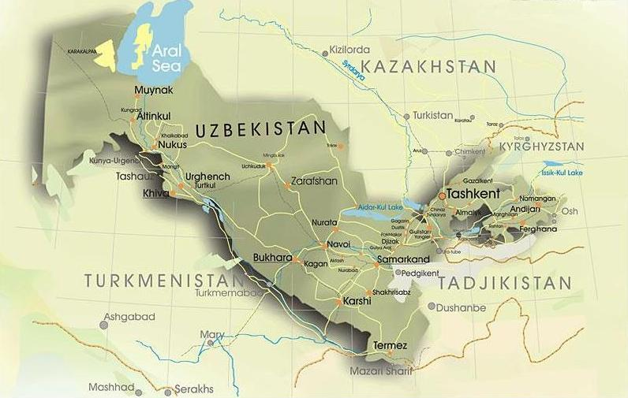
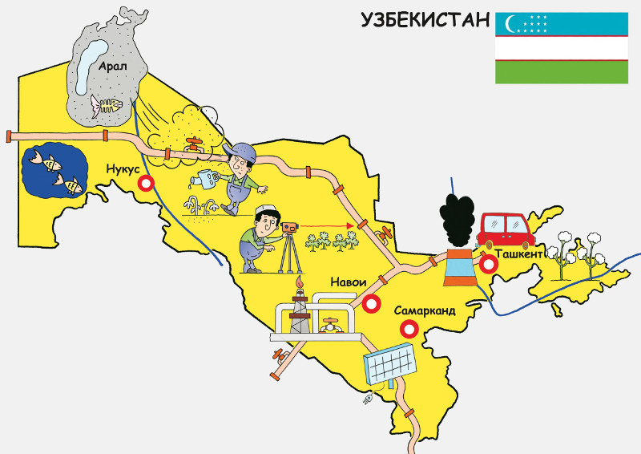
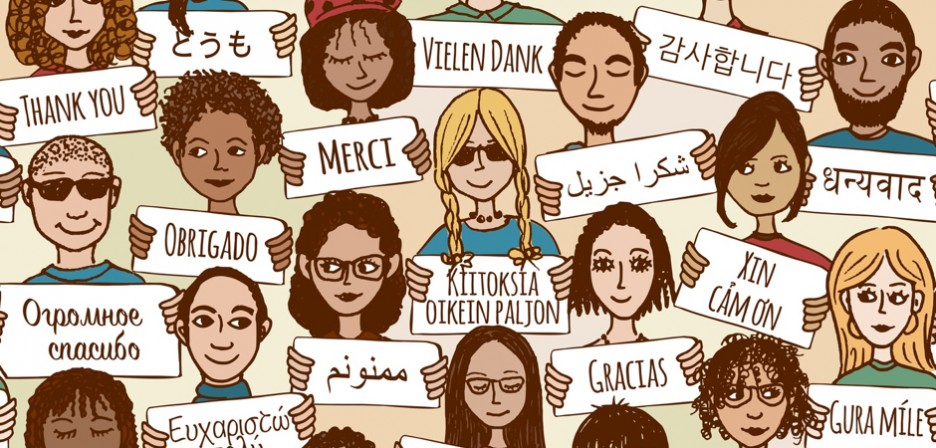

WELCOME TO UZBEKISTAN
About UZBEKISTAN

Uzbekistan is a multinational country. The two main languages are Uzbek and Russian but you will also hear several other languages including Korean, English, German, Tajik and Turkish. Besides the Uzbek population, Uzbekistan contains many other nationalities.
People in Uzbekistan wear different types of clothes. In villages you will observe women wearing traditional clothes like long variegated dresses and scarves. In cities they are less traditional and more modern. Men wear pants more often than jeans. Shorts are worn rather rarely and usually only by people in the city.Being a guest or inviting someone into your home is a big thing in Uzbekistan. People will often visit a friend or neighbor without a special reason. Uzbek people are known to be very hospitable and find it an honor to have a guest in their home. There are even special seating arrangements for guests. The eldest person or honored guest is usually invited to sit at the head of the table, away from the door.
The seasons greatly influence the composition of national foods. In summer, fruits, vegetables and nuts are widely used in cooking. Fruits grow in abundance in Uzbekistan such as grapes, melons, apricots, pears, apples, cherries, pomegranates, lemons, figs and dates. Vegetables are also plentiful, such as eggplants, peppers, turnips, cucumbers and luscious tomatoes. There are also some lesser-known species of vegetables such as green radishes, yellow carrots, and dozens of pumpkin and squash varieties.The Uzbeks prefer mutton to other kinds of meat; it is the main source of protein in the Uzbek diet. Beef and horsemeat are also eaten.The wide choice of bread is a staple for the majority of the population. Round, unleavened break or leplyoshka/non is usually baked in a tandir (round ovens made of mud) and served with tea. The national bread is often sold on street corners. Some varieties are cooked with onion or meat while others are simply sprinkled with sesame seeds.The most well-known Uzbek dish is 'PLOV' or 'OSH'. It is cooked with fried meat, onions, carrots and rice. Sometimes raisins, barberries, chickpeas or other fruits are added. Uzbeks are very proud of their skills to cook plov. A master plov chef cooks plov on an open flame, sometimes serving up to 1,000 people from a single cauldron on holidays or special occasions like weddings.Green tea is more popular in Uzbekistan than black but black is preferred in Tashkent.
CLIMATE

Uzbekistan has an extreme continental climate. It is generally warmest in the south and coldest in the north. Temperatures in December average -8˚C (18˚F) in the north and 0˚C (32˚F) in the south. Extreme fluctuations can take temperatures as low as -35˚C (-31˚F).
During the summer, temperatures can reach 45˚C (113˚F) and above. Humidity is low. Spring (April to June), and fall (September through October), are in general the most pleasant times to travel. The weather is mild and in April the desert blooms briefly. Fall is harvest time and the markets are full of fresh fruit.
If you’re interested in trekking, then the summer months of July and August are the best times since summers are almost dry. In recent years Uzbekistan was notably affected by the global warming and dry-out of the Aral Sea resulting in hotter and drier summers and colder and longer winters.
ECONOMY
Welcome to Samarkand
Uzbekistan is a dry, double landlocked country of which 11 percent consists of intensely cultivated, irrigated river valleys. More than 60 percent of its population lives in densely populated rural communities. Uzbekistan is the world’s second-largest cotton exporter and the fifth largest producer. The country relies heavily on cotton production as the major source of export earnings. Other major export earners include gold, natural gas and oil.
CULTURE and PEOPLE

Khiva, also spelled Chiwa, Chiva, or Jiva, city, south-central Uzbekistan. It lies west of the Amu Darya (ancient Oxus River) on the Palvan Canal, and it is bounded on the south by the Karakum Desert and on the northeast by the Kyzylkum desert. A notorious slave market was centred there from the 17th to the 19th century. The city is also known for the Islamic architecture within its 590-acre (240-hectare) historic centre.